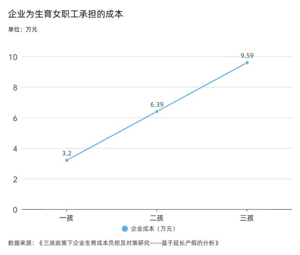

企业之困
生育成本的企业负担：隐性歧视与用工困境
4万+
企业承担总成本（元）
188天
平均产假天数
64%
隐性成本占比
0.7%
生育保险费率
企业生育成本全解析
💰 2025年企业生育成本调查结果
根据国家医保局政策和最新调查数据，企业承担的生育成本构成复杂：
成本构成详解：
直接成本
- 基本工资：约3.2万元
- 社保费用：按0.7%费率缴纳
- 占总成本：36%
隐性成本
- 培训替代人员
- 项目延期损失
- 占总成本：64%
总成本超过4万元，其中隐性成本占比高达64%，这是企业最大的担忧所在。
隐性歧视的普遍存在
🚫 招聘中的性别歧视
"我们公司招聘的时候，除非签三年不生育承诺书，否则不敢录用育龄女性。"
—— 上海某互联网大厂员工 徐业
这种负担导致"隐性歧视"普遍存在。企业在招聘时更倾向于：
- 优先招聘男性员工
- 选择已完成生育的女性
- 要求育龄女性签署不生育承诺
- 在同等条件下避免录用未婚未育女性
👶👶👶 多孩政策下的企业压力
随着三孩政策的实施，企业面临的成本压力进一步加大：
成本递增效应：
- 一孩：企业承担基础成本4万+
- 二孩：成本进一步增加，员工经验更丰富损失更大
- 三孩：企业承担的总成本和风险达到峰值
女职工生育二孩、三孩，企业承担的成本更高，这进一步加剧了对育龄女性的就业歧视。

多孩政策实施后企业成本压力分析
新就业形态的挑战
🚴♂️ 灵活就业人员的困境
成本压力正在向灵活就业群体蔓延，形成新的挑战：
政策尝试
- 江西、浙江等地试点
- 将灵活就业人员纳入生育保险
- 政策覆盖范围逐步扩大
现实困境
- 覆盖范围有限
- 报销比例仅为职工医保的60%
- 保障水平不足
对于外卖骑手、电商主播等新就业形态劳动者而言，生育意味着收入中断和社保断缴的双重风险。
不同行业的成本差异
💻 互联网行业
特点：高技能、高替代成本
- 员工技能要求高
- 项目连续性要求强
- 替代培训成本高
- 对育龄女性歧视最严重
🏭 制造业
特点：标准化程度高、替代相对容易
- 工作标准化程度高
- 员工替代相对容易
- 隐性成本相对较低
- 但直接成本压力仍存在
🏢 服务业
特点：人员流动性大、成本压力中等
- 人员流动性较大
- 培训成本中等
- 客户关系维护成本
- 季节性用工需求
⚖️ "政府请客、企业埋单"的困境
当前生育成本分担机制存在结构性问题：
政府层面
- 制定生育鼓励政策
- 设定产假标准
- 但成本主要由企业承担
企业层面
- 承担直接工资成本
- 承担巨额隐性成本
- 缺乏有效补偿机制
结果：企业生育成本分担机制不明确，可能进一步加剧女性就业歧视，形成恶性循环。
破解企业困境的路径
💰 成本分担机制
建立政府、企业、个人共担的生育成本机制，通过税收减免等方式减轻企业压力。
📋 政策完善
完善生育保险制度，扩大覆盖范围，提高保障水平，减少企业直接负担。
⚖️ 法律保障
加强反就业歧视法律保障，建立有效的监督和惩罚机制。
🤝 社会支持
发展普惠托育服务，减少企业和员工的后顾之忧。